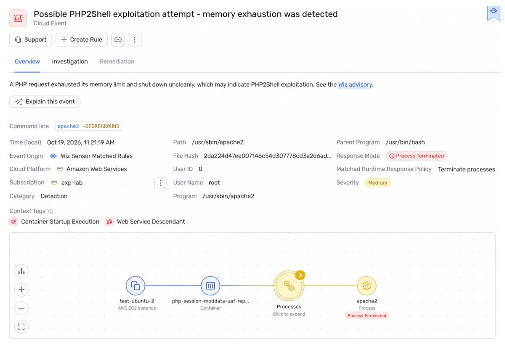

一、导语：一个模型，一周，两个满分漏洞
10 月 21 日，Wiz Research 公开了代号 PHP2Shell 的研究：PHP 核心引擎里存在多个内存安全缺陷，被归并为 CVE-2026-109618 与 CVE-2026-109619 两个编号，CVSS 最高 9.2 分。攻击者无需任何账号即可远程执行代码，或像 Heartbleed 那样把 PHP 进程内存里的密码、Token、API Key 和证书读出来。
受影响的不是某个插件、某个 CMS，而是 PHP 本身——从 PHP 5.4 开始，近十年发布的每一个版本至少中一个。PHP 驱动着全球约 70% 的网站，WordPress、Drupal、Joomla、维基百科的 MediaWiki 都在其中。而这次把十几年没人挖出来的东西挖出来的主力，是前沿模型。
二、背景分析：为什么这个洞埋了十几年才被发现
漏洞的根因是 PHP 处理请求时对「致命错误」的善后不干净。具体说，PHP 在请求启动阶段就会解析 multipart 上传，而 Session 的上传进度处理可能在模块初始化完成前就初始化状态、把会话 ID 写进响应头。一旦此时发生内存耗尽（OOM）之类的致命错误，请求堆被销毁，但某些全局指针没被清理——它指向的内存已经还给系统了。下一个被同一个 worker 处理的请求，就可能把攻击者重新占用的那块内存当成合法的内部结构来用。
这套链路在纸面上一直存在，但要把它变成能打的 exploit，需要串联多个缺陷、针对不同 PHP 版本和内存布局反复调试。Wiz 的说法很直白：这个难度「处在人类研究员实际能做到的边缘」。过去十几年，复杂度本身就是一道防线。
更麻烦的是影响面。应用层加固在这里没用——一个只输出 Hello World 的 PHP 页面，只要跑在受影响版本上，同样可以被拿下。Wiz 在 WordPress、Drupal、Joomla 的最新容器镜像上做了无认证 RCE 演示，但强调这些只是「代表性靶子」，漏洞在引擎里，不在 CMS 里。
三、核心内容：四个 bug、两个月、和一条被提前泄露的时间线
Wiz 一共报告了四个可复现的缺陷，全部源自同一类「致命错误善后不当」的模式：
- 上传进度反序列化 use-after-free：与内存泄露组合后，实现 WordPress、Drupal、Joomla 上的无认证 RCE。
- 致命错误回溯 use-after-free：跨请求的悬垂指针被发展成受控内存破坏，单独用于打通 Drupal。
- OPcache 共享前沿 type confusion：跨 worker 的类型混淆污染共享 OPcache 状态，构成打 WordPress 的 RCE 链。
- 应用无关的远程内存读取：不需要 RCE，直接把 worker 内存里别人的请求数据（含凭据）编码进响应 Cookie 带出来。
时间线也值得单独看一遍：8 月 19 日发现第一个漏洞，8 月 20 日打通 Drupal，8 月 21 日打通 WordPress，8 月 24 日报告给 PHP 安全团队。然后是一段长达近一个月的沉默——9 月 21 日PHP 才确认收到并开始做协同修复，10 月 21 日补丁发布并同步公开披露。
也就是说：发现用了两天，验证用了三天，修复用了两个月。修复慢不是维护者拖，而是这次不能打小补丁——Wiz 明确指出问题「深植于 PHP 代码库」，PHP 团队最终给出的补丁从根上消除了这一类模式及其所有变体，代价是动的是引擎级逻辑。中间这段时间，参与协调的名单几乎覆盖了整个 Web 基础设施：Google Cloud、Cloudflare、AWS、Microsoft、Automattic、Fastly、Akamai、Imperva、Vercel。这些厂商要做的事是给「来不及打补丁」的客户准备检测规则和临时缓解。

披露过程并不干净。据国内技术作者卡兹克的复盘，补丁上线前漏洞细节与攻击演示视频已经外流，部分国家的政府网站做了预防性下线，OpenAI 随后认领了「模型辅助发现」这一角色。NSA 也在同期发出警告，要求组织立刻打补丁，或者把无法修补的服务器下线。
四、各方反应：三家实验室、两种姿态
这次事件罕见地出现了「两条独立发现路径」。Wiz 用的是自家 Wiz Atlas 平台，加上 Gemini 4 Argon 和 GPT-5.6 Sol；另一家安全公司 Calif 则是用 GPT-5.6 Sol 独立发现了同一批问题。OpenAI 把这件事放进了自家的 Patch the Planet 计划叙述里，并顺手发了一个 Codex 技能，引导站点运行 github.com/openai/php2shell-checker 自查是否受影响——一个把「安全公告」做成开发者工具的做法。
「十多年来，这些关键漏洞之所以一直没被处理，是因为发现和利用它们实在太复杂。我们很高兴看到 Gemini 4 Argon 帮助防御方跨过了这道门槛。」
Wiz 自己对这件事的定性比厂商口径更锋利：过去「复杂度」是一种隐性的安全边际，现在这个边际正在消失。他们给出的对比是——前沿模型加持下，一名研究员一周完成了过去需要世界级团队数月的工作。
五、深度解读：漏洞挖掘的经济学被改写了
第一层，是成本结构。传统漏洞研究里，最贵的不是算力，是「懂内存布局的人」。而适配不同 PHP 版本、不同配置、不同内存布局的重复劳动，恰好是模型最擅长的活——它可以跑测试、读报错、改参数、再来一遍。Wiz 的描述是「hours」，不是「weeks」。当适配成本趋近于零，攻击者能覆盖的目标数量就不再受人力限制。
第二层，是「什么算有漏洞」的重新定义。过去评估风险看 CVSS、看是否可远程利用、看 exp 是否公开。现在还要多问一句：这个洞的利用门槛，会不会在半年内被模型降到脚踝高度？一个今天被判定为「理论上可利用但工程上不可行」的中危漏洞，明年可能就是脚本小子的日常工具。CVSS 分数是静态的，可利用性是动态的。
第三层，也是这次最值得记住的一点：防守方拿到了同一把武器。PHP2Shell 能被发现，本质上是模型在几十万行 C 代码里做模式识别，找的是「同一类善后缺陷」。这类工作对人是苦役，对模型是流水线。如果 AI 让攻击的边际成本下降，它同样让「系统性清扫存量代码」第一次变得经济——这正是 Patch the Planet 这类计划的立论基础。
但有个不舒服的推论：开源基础设施的维护者没有能力承接这份「红利」。PHP 这次的补丁由核心团队主导、由大厂协助验证，还算幸运；换成某个只有两个维护者、被 70% 网站间接依赖的小型库，同样的发现速度只会变成灾难。发现能力提升之后，修复能力的瓶颈会立刻暴露出来——这两个月里，真正卡住时间的不是找洞，是改引擎。
六、总结
一句话：PHP2Shell 证明前沿模型已经把「复杂」从安全边际里删掉了，而全球 Web 的修复速度还停在人力时代——补丁已经发布，接下来两周决定这 70% 里有多少人真的会升级。